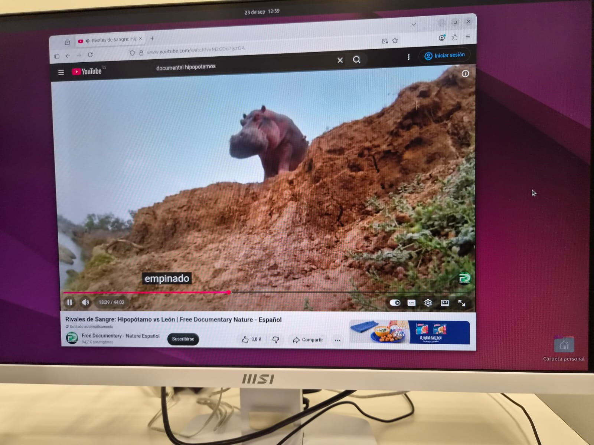

Roles iniciales
(no son muy estrictos porque somos un equipo reducido y con poca experiencia, por lo que nos ayudamos los unos a los otros)
- LORENZO: DOCUMENTACIÓN
- ÁNGEL: SECRETARIO
- LANZAROTE: COORDINADOR
- ALEX: GERENTE
Distribución de las tareas:
- Comprobar funcionamiento (Ángel)
- Desmontar y documentar cada componente (Lanzarote y Lorenzo) (primer y segundo día)
- Crear una tabla con la información de los componentes (Lorenzo) (segundo día)
- Montar el ordenador de nuevo (Ángel y Lanzarote)
- Instalar nuevo sistema operativo (Lorenzo) (tercer día)
- Plantear ideas sobre la gestión del almacenaje del inventario (Colectivo)
Memoria de trabajo
Al inicio de este proyecto hemos comenzado creando una base de datos de LibreOffice porque Lorenzo recibió clases sobre su funcionamiento en primero de bachillerato. No la utilizaríamos todavía porque antes queríamos ver si la torre de ordenador que nos habían dado funcionaba correctamente en un monitor. El ordenador ha funcionado inicialmente pero creemos que ya había sido utilizado porque nos pedía un login y una contraseña. El sistema operativo era Ubuntu, y hemos decidido que íbamos a reinstalar Ubuntu. El desmontaje del ordenador se complicó por la ausencia de destornilladores.
Antes de reinstalar Ubuntu hemos decidido clasificar los compontentes por su número de serie en la base de datos

Ya en casa, nuestro compañero Lorenzo utilizó un USB para grabar en él una distribución linux (Ubuntu 24.04.3), que era lo que tenía el ordenador como sistema operativo previamente. Además, verificó la imagen ISO por razones de seguridad.
El segundo día hemos desmontado la torre del ordenador para terminar la documentación de los componentes. Al desconectar de manera desorganizada el front panel de la placa base y no recordar cómo se volvía a montar, tuvimos algunas complicaciones en el trabajo que nos hicieron tardar más en montarlo de nuevo. Ya montado todo el ordenador, lo hemos conectado a un monitor y ha funcionado. Hemos reiniciado el ordenador para entrar en la BIOS y, con un USB conectado con la imagen ISO de Ubuntu hemos podido instalar el nuevo sistema operativo en el ordenador. También instalamos Ventoy en un pendrive por petición del profesor

El tercer día clonamos el repositorio de Abraham en un submódulo de nuestro repositorio de github. Nos costó bastante, aunque en realidad era sencillo, pero no estábamos bien familiarizados con la relación entre la máquina local y la web. También estuvimos un buen rato practicando con HTML de manera individual para poder hacer en un futuro una web que gestione la información del inventario. También creamos un apartado para gestionar la página web de la información del inventario en nuestro repositorio de github.
Lanzarote estuvo buscando más información sobre cada componente recogido en una tabla excel que creamos para que esta fuese completada. Al final de la clase, nos enseñaron más hardware para documentar.
El cuarto día Lanzarote empezó a recopilar la información del hardware que encontramos el día anterior y empezó a explorar maneras para compatibilizar una información con otra y contrastarla. Además, comenzó a crear la base de datos en SQLite, basada en la tabla excel que teníamos. Por otro lado, Ángel empezó a pasar la información que teníamos en el excel a una página web HTML. Además, se puso a trabajar con drawdb porque teníamos que gestionar mejor internamente la base de datos, visualizar las relaciones entre tablas, etc. Lorenzo buscó maneras de crear una página web en neocities que pueda desarrollarse de modo colaborativo utilizando Github Actions. Luego Lorenzo aportó un poco al índice del HTML y empezó a migrar la presente documentación a un html. Poco a poco, se empezó a centralizar toda la información en el repositorio de github
El fin de semana, Ángel terminó de hacer la tabla con la información del inventario.
El quinto dia hemos hecho trabajo extra en la web, Alex estuvo limpiando el codigo HTML y implementando una IU con CSS, hemos estado reorganizando la base de datos en drawdb y sqlite, por el otro lado, lanzarote esta construyendo la base de datos a partir de los datos de los componentes en SQlite, categorizando el inventario con los componentes clave y sus especificaciones, Angel estuvo poniendo las mismas caracteristicas en drawdb y nos hemos encontrado con un problema intentando exportar de drawdb a SQlite, hemos intentado varias vias, incluyendo consultar a un agente IA, a partir de la lista de los componentes que hemos recompilado, hemos consultado la informacion de los fabricantes en internet y puesto la informacion de las caracteristicas en la base de datos.
El miércoles Alex hizo la página de la información del inventario y estuvimos implementándola en github/neocities. También revisamos si el sistema operativo que teníamos en la torre (Ubuntu) funcionaba correctamente, y sacamos algunas fotos.

El jueves Lorenzo estuvo retocando la página web implementando algunas herramientas de CSS, hipervínculos regresivos, etc. Ángel y Lanzarote realizaron el "mockup" de la página web que nos pidió Marta y Alex añadió detalles a la página web del inventario (efecto WOW, más hipervínculos, etc.)
Ángel y Lanzarote también estuvieron mejorando la base de datos y añadiendo las informaciones que le faltaban.
El viernes estuvimos escuchando las bases del problema de la clase de bases de datos.
El lunes Ángel y Alex se pusieron a realizar el mockup de la web por petición de Marta, utilizando Balsamiq. Lorenzo y Alex siguieron con la documentación y mejorando la web.
Propuesta de transformación digital
Pilar 1: Identificación Única mediante Etiquetado QR Inteligente
- El problema real del reto: Es difícil saber visualmente qué características tiene una placa base, una memoria RAM o un equipo montado sin encenderlo o desmontarlo.
- La solución digital: Implementar un sistema de etiquetado con códigos QR vinculados dinámicamente a vuestra Base de Datos.
-
Cómo mejora la gestión: Cualquier técnico o profesor, escaneando el código QR con su móvil, puede ver al instante:
- El procesador, RAM y almacenamiento exacto del equipo.
- El historial de intervenciones (qué reparó vuestro grupo).
- Su estado actual (Funcional / En reparación / Para piezas).
Pilar 2: Automatización de la Auditoría de Hardware (Inventario Asistido)
- El problema real del reto: Consultar los componentes uno a uno en la BIOS o usar comandos de consola consume mucho tiempo y puede provocar errores humanos al transcribir los datos.
- La solución digital: Utilizar herramientas de auditoría automatizada por software de código abierto (como OCS Inventory o GLPI Agent) ejecutadas desde un USB de diagnóstico en el equipo recuperado.
- Cómo mejora la gestión: El software detecta automáticamente el modelo exacto de los componentes, los módulos de RAM, el estado de salud del disco (S.M.A.R.T.) y vuelca la información directamente en vuestra base de datos vía API, eliminando el registro manual.
Pilar 3: Algoritmo de Compatibilidad y Reutilización de Componentes
- El problema real del reto: Cuesta saber qué componentes de distintas generaciones pueden utilizarse conjuntamente (p. ej., si una RAM DDR3 sirve para una placa concreta).
- La solución digital: Explotar la base de datos que habéis diseñado integrando vistas lógicas o consultas de compatibilidad de zócalos (sockets) y ranuras.
- Cómo mejora la gestión: El sistema permite lanzar una consulta digital rápida (ej. "¿Qué módulos de memoria libres tengo compatibles con la Placa Base X?") para saber inmediatamente qué piezas se pueden combinar para recuperar un segundo o tercer ordenador sin probar ensayo y error físicamente.